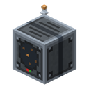
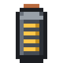

Диспетчерская
alaindustrial:town_dispatcher
Сводка
Диспетчерская — пульт, из которого посёлок восстанавливает и строит свои здания. В ней собирается план реставрации ратуши из трёх листов, в ней лежит очередь заказов — какие здания дроны чинят и строят и в каком порядке, — в её буфере лежат материалы, и только оттуда строительные дроны берут блоки. Первым восстанавливается ратуша, за ней — дома сменщиков.
Мини-пример: ядро ратуши горит, посёлок ваш. Поставьте диспетчерскую внутри ратуши, положите в неё три листа плана ратуши (каждый в свою ячейку) и нажмите «Собрать план» — план остаётся в диспетчерской. Поставьте над ратушей гнездо и вставьте в него строительного дрона, сложите в буфер блоки этапа и нажмите «Начать» на вкладке «Задание». Когда ратуша восстановлена, выберите дом во вкладке «Стройка» ядра и нажмите «Восстановить» — он встанет в очередь на вкладке «Заказы».
Как это работает
- Свой посёлок. Диспетчерская сама находит посёлок, на территории которого стоит (если территории двух посёлков перекрываются — тот, чьё ядро ближе), и больше его не меняет.
- Только в ратуше. Диспетчерская работает, только если стоит внутри ратуши своего посёлка — в её габарите. Снаружи она говорит «Не в ратуше». Своё место. В целой ратуше обоих стилей у диспетчерской есть своя клетка: угол первого этажа (клетка 2, 1, 1 шаблона ратуши; в руине там стоит корпус машины, расчистка его убирает). Там диспетчерская стройке не мешает и считается стоящей на месте. На любой свободной клетке пола она тоже никому не мешает. На клетке, где по плану другой блок (лавка, стойка, ковёр площадки дронов), диспетчерская встанет, но в чат сразу придёт строка, что здесь она помешает восстановлению ратуши, и где её место: когда дроны дойдут до этого этапа, работа остановится с причиной «Мешает: Диспетчерская».
- Одна на посёлок. Вторая диспетчерская того же посёлка не работает и говорит «В посёлке уже есть диспетчерская». Работает та, что начала работать раньше.
- План ратуши. Три листа плана ратуши кладутся в три ячейки плана, лист N — только в ячейку N (1 → 1, 2 → 2, 3 → 3), в том числе по Shift-клику: по пустой ячейке видно, какого листа ещё нет. Кнопка «Собрать план» берёт по одному листу из каждой ячейки и кладёт в ячейку плана «План реставрации». Листы должны быть одного стиля — стиля этого посёлка; если что-то не так, под кнопкой написано почему (нет листа, лист повторяется, листы разных стилей, чужой стиль). Готовый план можно и просто положить в ячейку плана. Собранный план остаётся в ячейке — это и есть действующий план, забирать его не нужно: вынутый план (или сломанная диспетчерская) останавливает дронов на ратуше, и работа стоит с причиной «Нет плана реставрации», пока план не вернут. В буфер ни листы, ни план не кладутся.
- Планы домов. План дома тоже кладётся в ячейку плана, но там не остаётся: посёлок изучает его и лист расходуется, а в чат приходит «посёлок изучил План дома (тип N)». Изученный тип посёлок знает навсегда, и дома этого типа можно заказывать. План, который посёлок уже знает, ячейка тоже забирает, без сообщения. План дома чужого стиля остаётся лежать в ячейке.
- Заказы. Работа посёлка — это заказ на конкретное здание. Заказ ставят кнопкой на карточке здания во вкладке «Стройка» ядра поселения («Восстановить», «Построить», «Починить»), а ратушу — и кнопкой «Начать» здесь. Заказ включает всё, что зданию нужно: расчистку, если есть что убирать, дорогу до сети посёлка у дома, который к ней не подключён, и стройку. Свободный дрон берёт первый заказ в очереди, которым ещё не занят другой дрон: одно здание — один дрон, при N гнёздах до N заказов идут параллельно. Готовое здание уходит из очереди само.
- Отменённый заказ. Отмена снимает все открытые работы здания; сделанное остаётся в мире. Сам посёлок отменённый заказ снова не ставит. Отменённую ратушу продолжает кнопка «Начать» (вкладка «Задание» пишет «Заказ отменён. Нажмите «Начать», чтобы продолжить»), отменённый дом — кнопка «Продолжить» на его карточке в ядре. Дроны продолжают с того места, где остановились.
- Очередь не теряет здания. Если заказ закончился, а здание так и не восстановлено и работ на нём нет, посёлок через 10 секунд ставит заказ снова сам — не чаще раза в 5 минут на здание. Если и тогда дронам нечего делать, вкладка «Задание» называет, что им мешает.
- Буфер материалов. 27 слотов. Дрон берёт отсюда блоки, и только отсюда: сундуки посёлка он не открывает. Предмет списывается в момент, когда дрон ставит блок, — не при вылете. Сюда же дрон складывает землю и камень, которые снимает на месте нового дома и на трассе дороги (что не влезло, падает на месте).
- Состояние. Лицо диспетчерской показывает радар: в покое — тихий экран, пока дроны посёлка работают — кольца связи расходятся от центра.
Почему стройка стоит
Ни одна работа не ждёт молча: у вставшей работы всегда есть причина и подсказка, что сделать.
| Причина | Что сделать |
|---|---|
| «Мешает: X в x y z» | «Уберите его, и стройка продолжится сама». Так дрон говорит о блоке, который он не трогает: блок с данными (сундук, машина) или любой блок, который не мусор, там, где по плану другой. Траву, цветы, снег и прочий мусор дрон убирает сам и не жалуется |
| «Дрону не долететь до x y z» | «Освободите проход по воздуху к этому месту, и стройка продолжится сама» |
| «Не удаётся построить: X (x y z)» | «Посмотрите на это место: уберите то, что там стоит, или отмените заказ» |
| «Нет материалов: …» | «Положите недостающее в буфер (вкладка «Буфер»)» |
| «Нет плана реставрации» | «Положите план реставрации в ячейку плана» |
| «Нет пути для дороги» | «Нет пути с перепадом не больше блока: расчистите путь или проложите дорогу или кабель сами» |
| «Чанк не загружен» | «Подойдите ближе, чтобы чанк загрузился» |
| «Нет энергии» | «Подайте энергию в ядро посёлка» |
Если ратуша не восстановлена, а дронам нечего делать, потому что на месте блока плана стоит блок с данными, вкладка «Задание» пишет красным «X стоит там, где по плану Y (x y z)» и «Дроны не трогают блоки с данными: уберите его сами и нажмите «Начать»». Убрали — работа идёт дальше сама.
Кто управляет
План, материалы, порядок и отмена заказов и запуск стройки — только восстановитель посёлка. Игроку, который не часть посёлка, диспетчерская не открывается вовсе: в чат приходит «Ядро не узнаёт вас: вы не часть этого посёлка.» Оператор в творческом режиме открывает окно и видит всё, но не может ни положить, ни взять предмет, ни собрать план, ни поменять очередь, ни запустить стройку. Выбрать заказ для просмотра может любой, кого посёлок узнаёт. Пока посёлок никто не разбудил, управлять может любой.
Интерфейс
Окно 256 × 240 точек — помещается на экран 1280 × 720 при масштабе интерфейса 3; вкладки — значками по левому краю, как у ядра поселения: «Задание», «Заказы», «Буфер», «Материалы», «Журнал». Весь текст переносится на следующую строку и не заходит на инвентарь.
- Вверху — имя блока (на остальных вкладках — имя вкладки), под ним отдельной строкой состояние: «Рядом нет посёлка», «Не в ратуше», «В посёлке уже есть диспетчерская», «Ждёт работы», «Дроны работают» или причина, по которой план не собрался.
- «Задание» (открывается первой) — ряд плана: три ячейки листов, кнопка «Собрать план», ячейка плана, кнопка «Начать»; под ним, в рамке над инвентарём, список из четырёх шагов для выбранного заказа (по умолчанию — первого в очереди, а без заказов — ратуши). Список не выходит за рамку: если он выше, колесо мыши его листает и справа появляется полоса прокрутки. У каждого шага — галочка или крестик, у незакрытого — что делать дальше:
- «План реставрации» — у ратуши: «Положите 3 листа плана в слоты выше и нажмите «Собрать план»»; собран — «Оставьте план здесь, забирать его не нужно»; план другой ратуши — крестик и «Этот план для другой ратуши». У дома: «Посёлок знает план дома типа N» или «Этому дому нужен план дома типа N»;
- «Гнёзда с дроном: N из M» — сколько гнёзд с дроном стоят над ратушей и работают, и сколько разрешает тир ядра;
- «Материалы этапа в буфере» — всё, что нужно текущему этапу выбранного здания, лежит в буфере;
- «Стройка» (с именем выбранного заказа) — пока работы идут, «Работы идут: «Начать» не нужна» и под ней работы здания с их состоянием, а у вставшей — причина красным и подсказка; у ратуши, по которой работы нет, — «Нажмите «Начать»» или ««Начать» откроется, когда будут план и дрон»; после восстановления — «Ратуша цела, дроны следят за ней сами».
- Кнопка «Начать» — для ратуши. Неактивна, пока чего-то не хватает; подсказка на ней перечисляет, чего именно. Обязательны: восстановитель посёлка, ратуша, которую можно восстановить и по которой ещё нет работы, план этой ратуши в ячейке плана и хотя бы одно гнездо с дроном над ратушей. Материалы не обязательны: первой идёт расчистка, ей блоки не нужны, поэтому нехватка материалов — только предупреждение в подсказке («Материалов мало: дроны начнут с расчистки»). Если дронам нечего делать — «Дронам нечего строить: см. пояснение в шаге «Стройка»». Сервер проверяет то же самое ещё раз при нажатии. «Начать» ставит заказ ратуши первым в очереди. После восстановления ратуши кнопка неактивна навсегда («Здание восстановлено, дроны следят за ним сами»): повреждённую ратушу дроны чинят сами, ремонт ставится без кнопки.
- «Заказы» — очередь заказов посёлка в её порядке, каждый на светлой карточке: имя здания (у ремонта — «Ремонт: …»; зелёное, пока здание держит дрон) и под ним, где стоит его работа: вид работы и «работает дрон», «следующим возьмёт свободный дрон», «ждёт свободного дрона, все заняты» или «нет дрона, поставьте гнездо с дроном над ратушей» («Стройка: работает дрон»), а ещё «Ждёт дорогу: дом строится после неё», «Положите план ратуши в ячейку плана», «Этому дому нужен план дома типа N» или причина остановки (красным). Справа у восстановителя три кнопки: ▲ «Раньше в очереди», ▼ «Позже в очереди», ✕ «Отменить заказ». Щелчок по карточке выбирает заказ — его показывают вкладки «Задание» и «Материалы», а карточка выбранного выделена. Выбор не сохраняется: после перезахода снова показан первый заказ. Пустая очередь пишет «Заказов нет: выберите здание во вкладке «Стройка» ядра или нажмите ПКМ по вводу дома».
- «Буфер» — три ряда по девять слотов и подсказка, что дроны берут блоки только отсюда.
- «Материалы» — текущий этап выбранного здания («Дом-капсула (тип 1): этап 2 из 5, Стены») и сетка значков предметов этапа, как в слотах. У дома, которому ещё нужна дорога, первым этапом идёт «Дом-капсула (тип 1): этап «Дорога», ещё N блоков дороги»: блоки дороги посёлка и грунт под поднятые места. Земля под фундамент дома считается в той же строке «Грунт»: подходит земля, каменистая земля, булыжник, глубинный булыжник, камень и песчаник. Под значком — «есть/нужно»: красным, пока не хватает, с зелёной галочкой, когда хватает. Наведение показывает обычную подсказку предмета; колесо мыши листает длинный список. Дому неизученного типа вкладка пишет «Дом-капсула (тип N): посёлок ещё не изучил план дома типа N». Shift-клик по предмету в своём инвентаре, пока открыта эта вкладка, кладёт в буфер ровно столько, сколько этапу ещё не хватает (нужно минус то, что уже лежит в буфере), остальное остаётся у игрока; предмет, которого этап не просит, не перекладывается. На других вкладках Shift-клик обычный.
- «Журнал» — что дроны сделали, новое сверху, у каждой строки игровое время; колесо мыши листает. Отдельной строкой отмечены готовый этап, восстановление здания, повреждение и починка ратуши, нехватка материалов.
- Ниже инвентарь игрока.
Сообщения в чат
Новости стройки приходят восстановителю посёлка, пока он в сети, с тегом [Ala Industrial]. Каждая строка начинается заголовком «Посёлок № N (ядро x, y, z):» и раскрашена: заголовок белый, координаты серые, имена зданий, этапов и планов жёлтые, то, что готово, — зелёным, то, что сломалось или встало, — красным, следующий шаг игрока — золотым.
- Этап ратуши готов: «этап «Стены» готов. Дальше «Убранство»: сложите материалы в диспетчерскую.» — или «Дальше «Убранство», материалы уже в диспетчерской, дрон продолжает.»
- Этап дома готов: «Дом-капсула (тип 1), этап 2 из 5 «Стены» готов.» и то же «Дальше …».
- Расчистка закончена: «дроны расчистили площадку здания «…» и землю вокруг.»
- Первое восстановление ратуши — одна строка вместе с планом дома, который она даёт: «ратуша восстановлена. Посёлок оживает. Получен План дома (тип 1).» Отдельной строки о последнем этапе нет. Если доля восстановления набрана раньше, чем дроны доделали последние клетки, строка приходит, когда работа закончена и заказ ушёл из очереди.
- Дом восстановлен: «дом-капсула восстановлен, есть жильё ещё для одного сменщика.» Новый дом: «заложен новый дом «…». Дроны расчистят площадку, проложат дорогу и построят его.» и «построен новый дом «…», есть жильё ещё для одного сменщика.»
- План дома изучен: «посёлок изучил План дома (тип N).»
- Стройка встала из-за того, что дрон сам не уберёт: «стройка здания … остановлена. Мешает: X в x y z.» и золотом, что сделать. Так приходят «Мешает», «Дрону не долететь» и «Не удаётся построить» — один раз на здание и причину; та же причина снова придёт, только когда место изменилось или работа закончилась.
- Ремонт восстановленной ратуши этапами не считается: одна строка, когда ремонт поставлен («ратуша повреждена, дроны чинят»), и одна, когда она снова целая («ратуша починена»); обе идут и в «Журнал».
- Диспетчерская поставлена на клетку, где по плану другой блок: «диспетчерская здесь помешает восстановлению ратуши. По плану здесь: Еловый люк.» и золотом «Её место в ратуше: x, y, z.» Эту строку получает тот, кто поставил диспетчерскую.
Инвентарь
| Слоты | Принимает | Кто кладёт |
|---|---|---|
| 1–3 | лист плана ратуши: в ячейку N только лист N | восстановитель посёлка |
| 4 | план реставрации; план дома (изучается и расходуется) | кнопка «Собрать план» или восстановитель |
| 5–31 | материалы стройки (не листы и не планы) | восстановитель посёлка; воронки и трубы — тоже; дрон кладёт сюда снятую землю и камень |
Энергия
Диспетчерская энергию не берёт: дроны заряжаются от ядра поселения через свои гнёзда.
Свойства блока
| Поле | Значение |
|---|---|
| Форма | корпус машины LV — полный куб 16³; сверху у заднего угла антенна (стойка 1 px, кольцо и медный наконечник), до 6 px над блоком. Форма клика — куб и антенна, коллизия — куб |
| Установка | лицом к игроку |
| Прочность и инструмент | как у машин: кирка, прочность 3, взрывостойкость 6. В разбуженном посёлке ломает только восстановитель |
| Дроп | диспетчерская и всё из её слотов |
Рецепты
Верстак: машинный корпус, две электронные схемы, батарея, медный кабель (антенна) и четыре медные пластины.
| Ряд | Слоты |
|---|---|
| 1 | медная пластина · медный кабель · медная пластина |
| 2 | электронная схема · машинный корпус · электронная схема |
| 3 | медная пластина · батарея · медная пластина |
Прогрессия
- Требует ядро поселения своего посёлка и план реставрации ратуши из трёх листов.
- Даёт работу гнёздам дронов на крыше ратуши.
- После ратуши — дома сменщиков: планы домов, ввод дома, ложе-зарядка и дорога посёлка.
Связанное
- Гнездо дрона — дрон берёт материалы из буфера диспетчерской.
- Ядро поселения — карточки зданий, кнопки заказов и вкладка «Стройка».
- План дома — изучается в ячейке плана.
Крафт
Крафт на верстаке

▶
Диспетчерская